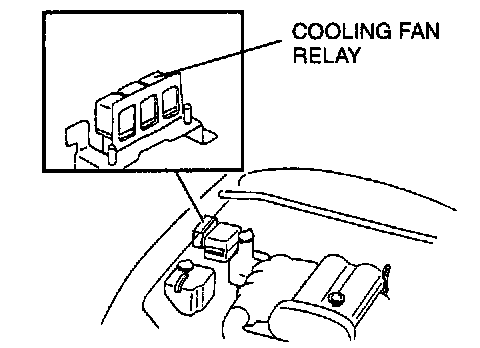
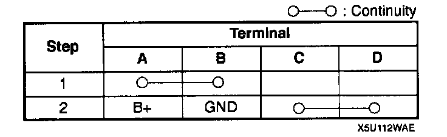
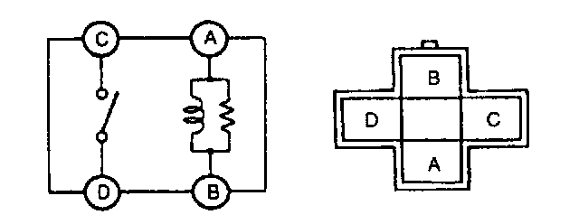

Radiator Cooling Fan Motor Relay: Testing and Inspection
COOLING FAN RELAY INSPECTION1. Disconnect the negative battery cable.

2. Remove the cooling fan relay.


3. Apply battery positive voltage and inspect for continuity between terminals of the cooling fan relay by using an ohmmeter.
4. If not as specified, replace the cooling fan relay.